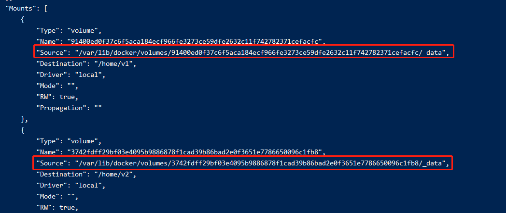

103-dockerFile的volume
dockerFile里面自带了VOLUME指令，可以指定镜像中的数据卷。
在前面的docker中也有对应的参数-v，但是-v可以支持我们自定义宿主机到镜像路径的映射
而dockerFile的VOLUME不行，只能定义镜像里面的路径，然后docker会自动在宿主机创建一个随机的路径作为数据卷
1、例子
编写dockerFile
FROM centos VOLUME [ "/home/v1", "/home/v2" ] CMD /bin/bash上面定义了centos镜像，镜像中的
/home/v1和/home/v2与宿主机数据共享构建成镜像
docker build -f ./dockerFile -t xhcentos .查看构建的镜像并启动
docker images docker run -it xhcentos通过
docker inspect查看容器的详细信息# 47a700511b8b: 容器id docker inspect 47a700511b8b在详细信息里面有个
Mounts字段，里面就记录了容器的各个数据卷，通过source字段就可以知道宿主机的位置了
修改共享数据卷
cd /var/lib/docker/volumes/91400ed0f37c6f5aca184ecf966fe3273ce59dfe2632c11f742782371cefacfc/_data
vim haha.txt
再进入容器，就可以看到共享数据卷的同步过来了
```shell
docker attach 47a700511b8b
cd /home/v1